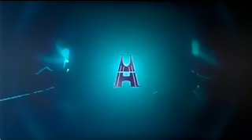
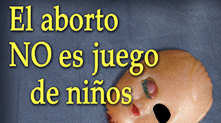

Demo reelReels de Universidad Hispana
Un recorrido corto sobre algunas campañas que he producido para la universidad a lo largo de los años.
#Reel#AfterEffects#MAYA
Trabajo en el cruce entre desarrollo de software, diseño gráfico, videojuegos y docencia. Esta página reúne los proyectos que mejor representan ese cruce, organizados para que puedas revisarlos en pocos minutos.

Demo reelUn recorrido corto sobre algunas campañas que he producido para la universidad a lo largo de los años.

CartelMi participación en el taller "De lo abstracto a lo figurativo", impartido por Francisco "Paco" Galvez, el objetivo fue llevar una idea dificil de comunicar a algo tangible.
Síntesis de contenido informativo en un formato impreso con una ruta de lectura clara.
Dos piezas pensadas como serie, con una intención visual compartida entre ambas.
Personajes, props y estudios de anatomía modelados como piezas sueltas de una colección en crecimiento.
Fotografía, ilustración, proyectos individuales y evidencias de trabajo, organizados por categoría. Arrastra tus imágenes a la carpeta correspondiente y aparecerán aquí automáticamente.
Selección de fotografía personal y profesional.
0 de 0 agregadasIlustración digital y tradicional.
0 de 0 agregadasCapturas de proyectos individuales que no tienen una tarjeta propia en el portafolio.
0 de 0 agregadasConstancias, capturas de resultados y otro material que respalda el trabajo mostrado arriba.
0 de 0 agregadas